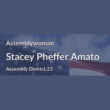

The district
 State Assembly
State Assembly State Senate
State Senate Congress
Congress Subway
Subway Citi Bike
Citi Bike NYC Ferry
NYC FerryTurn layers on and off. Tap an official's logo or a board's seal for its page. Zoning and land use lot by lot are on the land use map.
About
Council Member Joann Ariola represents City Council District 32. It sits in Queens.
The district overlaps community boards Queens 5, Queens 9, Queens 10 and Queens 14.
It is policed by the 100th, 102nd, 104th and 106th Precincts.
It overlaps Assembly districts 23, 28 and 38 and Senate districts 10, 15, 18 and 19.
First elected in 2021 and sworn in January 2022. Members of the City Council serve four year terms and are limited to two consecutive terms.
Next on the ballot in November 2029, when the seat will be open: Council Member Ariola is term limited and cannot run again. For the election in front of us, see where you vote in November 2026 or what is coming up on the calendar.
Council District 32 in numbers
The Census publishes no figures for council districts. These are the community districts Council District 32 covers.


U.S. Census Bureau, American Community Survey 2019-2023 5-year estimates.
Committees
Contact
Overlap
Community boards
Bars show how many of the district's election districts fall in each board.
Overlapping elected officials



| Queens CB 10 | 24% of the council district | 51% of it |
| Queens CB 14 | 24% of the council district | 45% of it |
| Queens park/airport area | 20% of the council district | 58% of it |
| Queens CB 5 | 14% of the council district | 24% of it |
| Queens CB 9 | 11% of the council district | 35% of it |
| Queens park/airport area | 6% of the council district | 94% of it |
| Queens CB 6 | 1% of the council district | 3% of it |
| 100 Precinct | 43% of the council district | 76% of it |
| 106 Precinct | 25% of the council district | 51% of it |
| 102 Precinct | 17% of the council district | 46% of it |
| 104 Precinct | 14% of the council district | 24% of it |
| 112 Precinct | 1% of the council district | 2% of it |
| Sector 100C | 29% of the council district | 100% of it |
| Sector 106A | 18% of the council district | 86% of it |
| Sector 104A | 14% of the council district | 81% of it |
| Sector 100B | 12% of the council district | 62% of it |
| Sector 102D | 9% of the council district | 80% of it |
| Sector 102B | 8% of the council district | 98% of it |
| Sector 106B | 6% of the council district | 53% of it |
| Sector 100A | 2% of the council district | 19% of it |
| Sector 112A | 1% of the council district | 5% of it |
| School District 27 | 78% of the council district | 36% of it |
| School District 24 | 21% of the council district | 19% of it |
| School District 28 | 1% of the council district | 1% of it |
| Senate District 10 | 51% of the council district | 23% of it |
| Senate District 15 | 31% of the council district | 39% of it |
| Senate District 19 | 9% of the council district | 8% of it |
| Senate District 18 | 9% of the council district | 15% of it |
| Assembly District 23 | 69% of the council district | 73% of it |
| Assembly District 38 | 24% of the council district | 68% of it |
| Assembly District 28 | 7% of the council district | 17% of it |